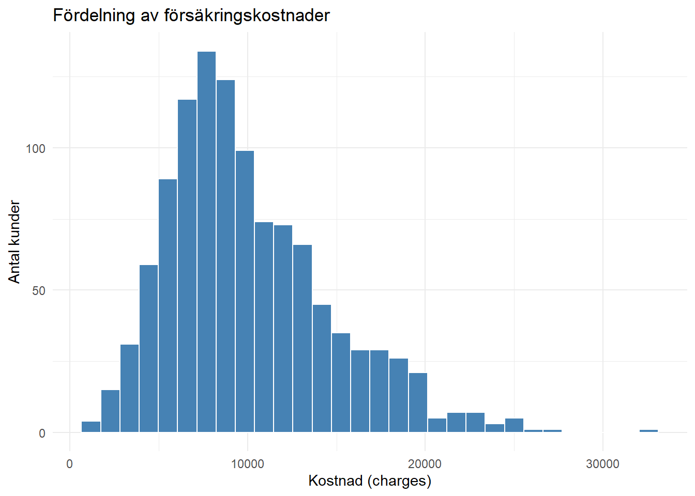
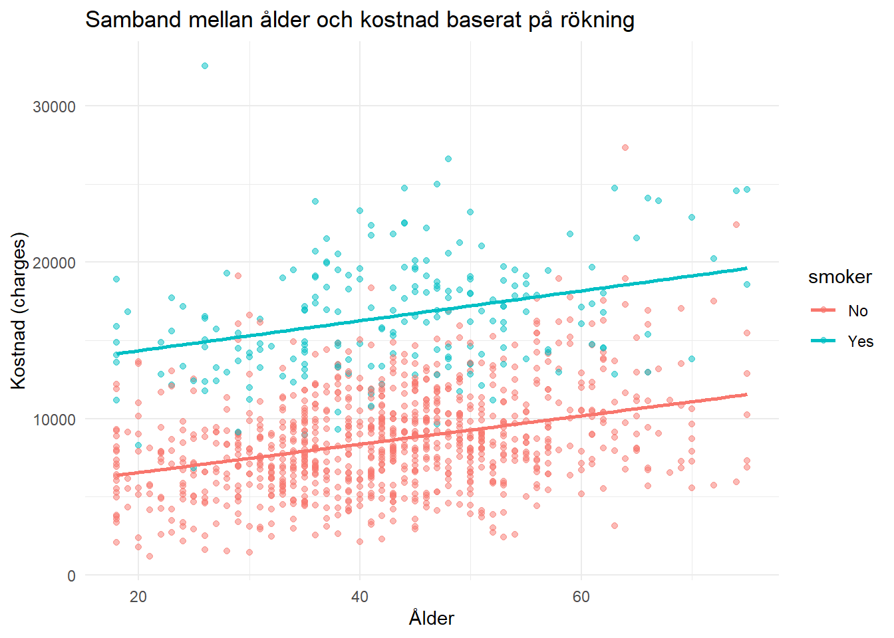
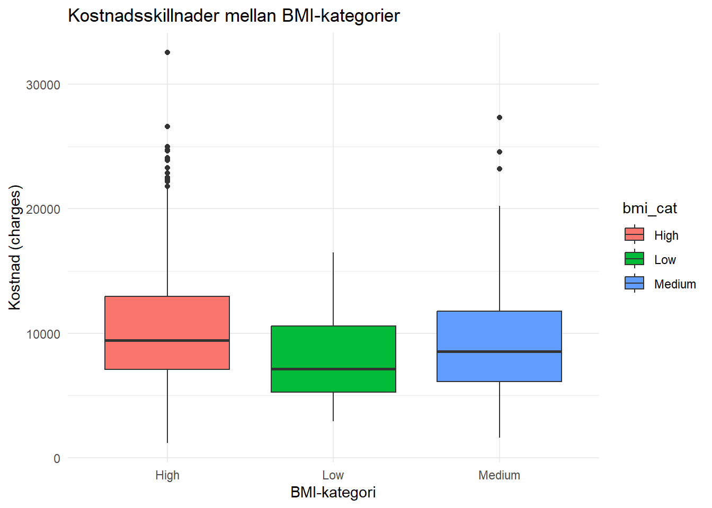
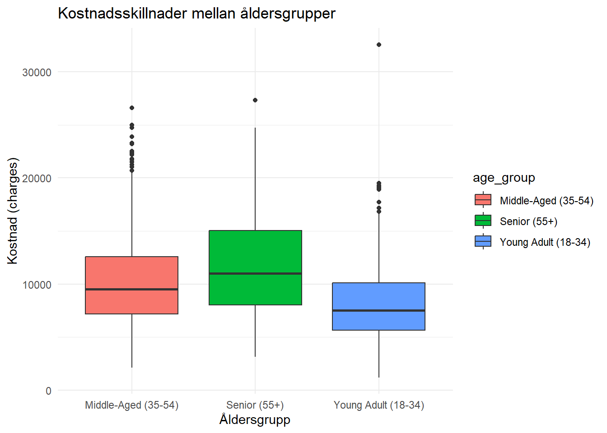
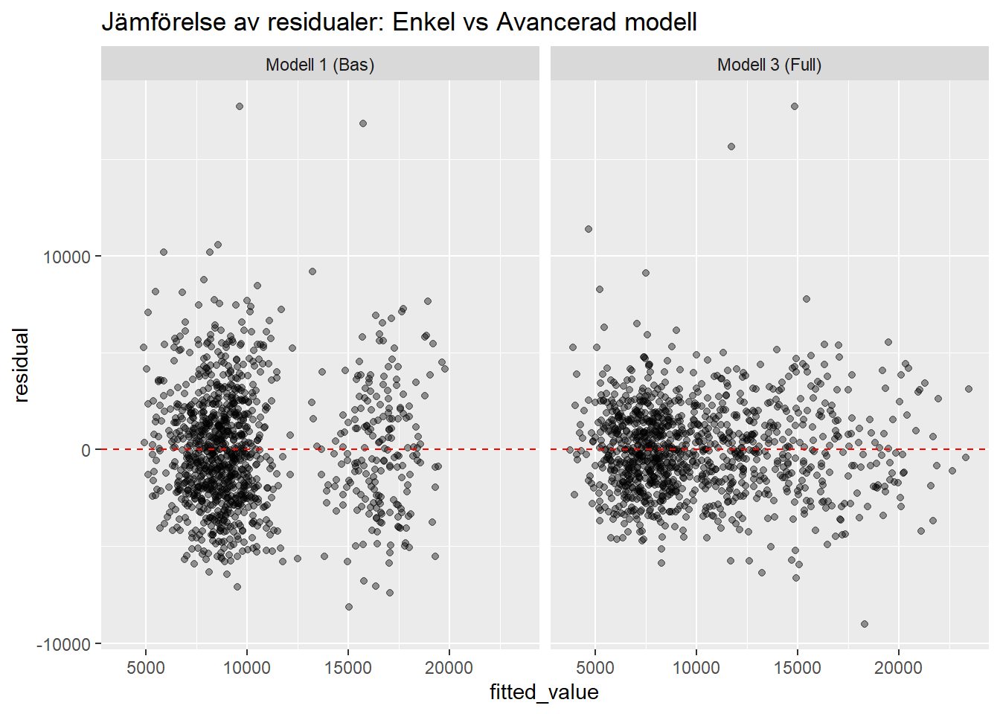
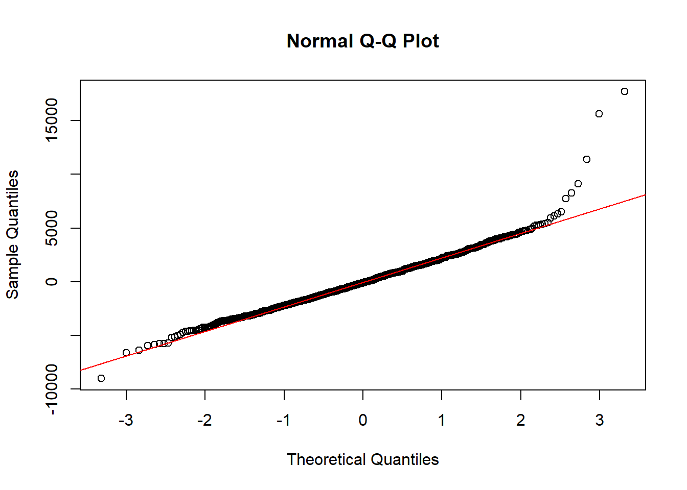

Case: Försäkringskostnader – analysera vilka faktorer som hänger ihop med kostnader
Mål och syfte
Syftet med analysen är att undersöka vilka variabler som har störst samband med försäkringskostnader (charges) samt att identifiera vilka faktorer som bäst förklarar variationen i kostnader mellan kunder. Fokus ligger på att analysera livsstilsfaktorer, hälsotillstånd och tidigare försäkringshistorik genom regressionsanalys. Analysen strävar efter att skapa en förklaringsmodell som kan användas som beslutsstöd för prissätning och riskbedömning.
Metod
Analysen genomfördes i programmeringsspråket R med hjälp av ekosystemet tidyverse. Arbetsprocessen delades upp i följande steg: 1. Datastädning: De saknade värdena i bmi och annual_checkups hanterades genom median medianimputering för att bevara datans centrala mått utan att påverkas av extremvärden. Textvariabler standardiserades för konsekvent gruppering.
Feature Engineering: Nya kategoriska variabler skapades(bmi_cat, age_group) för att möjliggöra tydligare gruppjämförelser.
Explorativ dataanalys (EDA): Statistiska sammanfattningar och visualiseringar(histogram, boxplots och scatterplots) användes för att förstå kostnadernas fördelning och identifiera eventuella samvariationer.
Regressionsanalys: Tre linjära modeller byggdes stegvis för att utvärdera hur olika variabelgrupper(demografi, hälsa och historik) bidrar till att förklara kostnaden.
Resultat
Den explorativa analysen visar att försäkringskostnaderna är kraftigt högerskeva. Det innebär att en majoritet av kunderna har låga kostnader medan ett fåtal “outliers” står de för mycket höga kostnaderna.
-Rökning: Visade sig vara den enskilt mest avgörande faktorn, där rökare ligger i ett betydligt högre kostnadsskit oavsett ålder.

-BMI och Ålder: Båda variablerna uppvisar en positiv samvariation med kostnad, där högre BMI och högre ålder korrelerar med en högre kostnad.


Regresionsanalys(Modelvall och tolkning)
Den slutgiltiga modellen (Modell 3) inkluderar variablerna age, smoker, bmi, chronic_condition, exercise_level, prior_accidents och prior_claims.
-Modellprestanda: Modellen förklarar 73,12% av variationen i kostnader(Adjusted R-squared = 0,7312), vilket anses vara en stark förklaringsgrad för denna typ av data.
-Viktigaste prediktorer: Rökning ökar den förväntade kostnaden med ca 7 393 enheter, och kroniskt tillstånd med ca 3 961 enheter, när övriga faktorer hålls konstanta. Tidigare olyckor och anspråk är också statistisk signifikanta och bidrar till högre kostnadsuppskattningar.
Tolkning och slutsatser
Vilka faktorer som verkar ha tydligast samband med kostnader? Analysen visar att rökning är den enskilt kraftigaste faktorn för försäkringskostnaden. Att vara rökare ökar den förväntade kostnaden med 7393 enheter om allt annat är lika(model_3). Det kroniska tillståndet(chronic_condition) har också ett mycket starkt samband och ökar kostnaden med 3961 enheter (model_3). “Historik”-variablerna tidigare olyckor och tidigare anspråk visar också tydliga och statistiskt signifikanta samband. Varje incident ökar de förväntade kostnaderna markant(1057 och 899 enheter)
Vad analysen visar? Model_3 är den starkaste och blir den slutgiltiga modellen. Den har högst förklaringsgrad för variationen(drygt 73%) och lägst residual error.

Analysen visar att kostnaderna drivs av en kombination av tre dimensioner: livsstil(rökning), biologiska faktorer(ålder och BMI) och historiskt riskbeteende(tidigare skador och anspråk). Visualiseringarna bekräftar att datan är högerskev, vilket innebär att en majoritet av kunderna har relativt låga kostnader medan en liten grupp står för de högsta kostnaderna.
Vad modellen inte fångar?
- Extremvärden: Modellen har svårt att fånga de allra dyraste fallen rätt. Det blir tydligt då residualerna stäcker sig upp till från -9 006 till +17 702

icke-linjära samband: Modellen antar att kostnaderna ökar linjärt med ålder och BMI. I verkligheten kan dock kostnaderna öka exponentiellt vid t.ex extrem BMI eller väldigt hög ålder.
Övriga varibler: Analysen saknar infomation om andra livstillsval, ärftliga faktorer eller mer detaljerad medicinsk historik som sannolikt påverkar charges.
Vilka förbättringar som hade kunnat göras? - Log-transformering: Genom att log-transformera den beroende variabeln(charges) hade skevheten i datan kunnat hanteras bättre och påverkan från extremvärden hade minskat.
Interaktionseffekter: Att undersöka eller inkludera ett samspel mellan variabler som t.ex smoker * bmi hade kunnat fånga upp om rökning är extra kostsamt för kunder med högt BMI.
Fler prediktorer: Att inkludera variabler som plan_type, annual_checkups eller annan data skulle kunna höja modellens förklaringsgrad mer.
Sammanfattningsvis är model_3 ett bra verktyg för att förstå de genomsnittliga drivkrafterna bakom försäkringskostnader. Modellen förklarar dock inte hela variationen och bör användas med försiktighet när det kommer till att förutsäga kostnader för enskilda individer med extrema kostnader.
Självreflektion
Vad tycker du att du gjorde bra i uppgiften? Jag är nöjd med den systematiska processen i datastädningen och modellbygget. Istället för att bara hoppa till analysen lade jag stor vikt vid att förbereda datan genom att hantera saknade värden med medianimputering för att bevara datans fördelning. Jag skapade också nya variabler(bmi_cat och age_group) som gav analysen mer djup. Mitt stegvisa tillvägagångsätt i regressionsanalysen, där jag jämförde tre olika modeller, gjorde det tydligt hur en grupp av variabler bidrog till att förklara försäkringskostnaderna.
Vad var svårast? Det svåraste var att tolka residualdiagnostiken och förstå vad avvikelserna i QQ-plotten och spridningen i residualplotten faktiskt innebar för modellens tillförlitlighet. Att balansera mellan en statistiskt stark modell(högt r-squared) och att samtidigt vara medveten om dess begränsningar när det gäller att förutsäga extremvärden krävde en del kritiskt tänkande.
Vilket betyg tycker du att din inlämning motsvara, G eller VG? Jag anser att min inlämning motsvarar VG.
Motivering Jag anser att jag har uppfyllt samtliga kriterier för Godkänd genom en relevant analys, tydlig struktur och rimliga slutsatser. Utöver detta har jag uppfyllt VG-kriterierna genom att:
-Fördjupad regressionsanalys: Jag har jämfört inte bara två utan tre olika modeller och motiverat valet av den slutgiltiga modellen baserat på förbättringar i Adjuster R-squared (från 0,54 till 0,73) och minskat Residual Standard Error.
-Kritiskt resonemang: Jag har fört en djupgående diskussion om modellens begränsningar, såsom dess svårighet att hantera extrema outliers och den skevhet som synns i residualanalysen.
-Tolkning och slutsatser: Jag har identifierat tydliga förbättringsförslag, som log-transformering av kostnadsvariabeln för att hantera skevhet och inkludering av interaktionseffekter mellan rökning och BMI.
-Säker tolkning: Jag har tolkat koefficienterna för både numeriska och kategoriska variabler på ett korrekt sätt, inklusive referenskategorier i den multipla modellen.